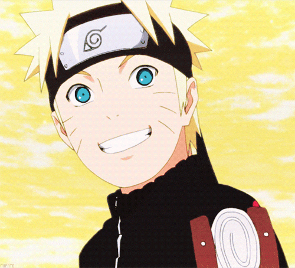
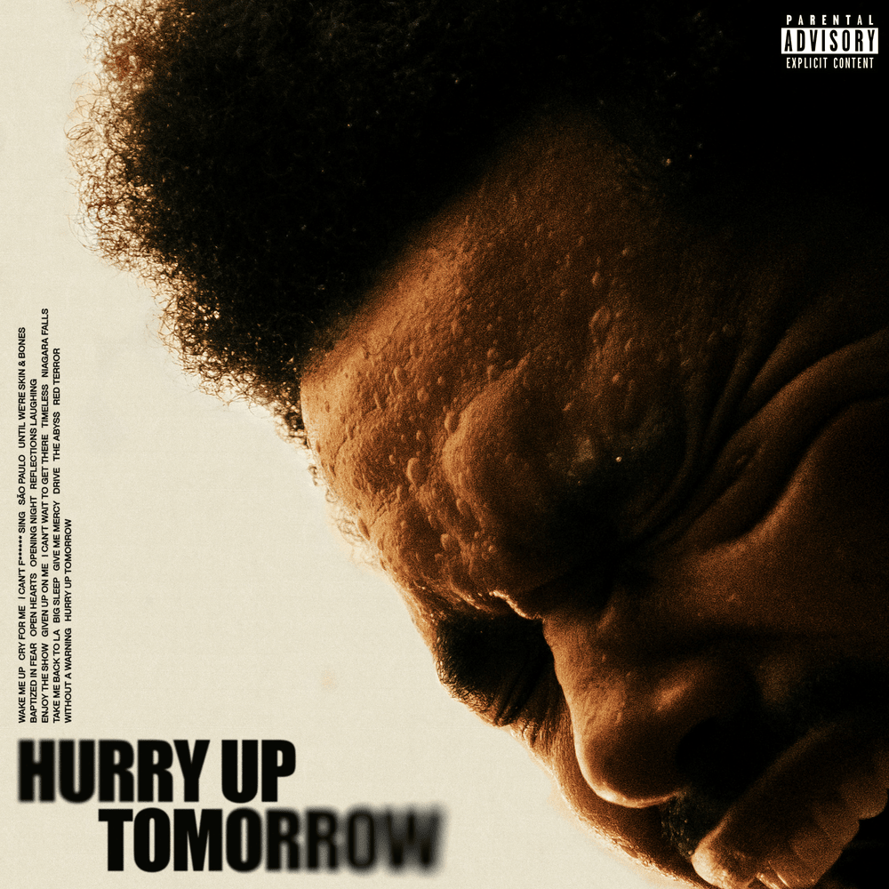

Hoş geldin
merhaba site ziyaretçileri (büyük ihtimalle 3 kişi falan olacak) hoş geldiniz. sevgilimden özenip yaptığımIZ siteye bi göz gezdirin bakalım. kesinlikle benimle alakası olmayan şeyler yazıcak. let's get this party started 🎉

Ben kimim
Zeynep Elif Yağmur
26 · Kayseri
ben Zeynep hepinizin bildiği gibi elif de olabilirim moduma bağlı. eğlenceli biri olduğumu varsayıyorum bazen sosyal anksiyetem var bazen hiç yok nasıl denk geldiğini ben de çözemiyorum. ama her şeyi iyi yönünden görmeye çalışırım genelde mutluyum alıngan olduğum zamanlar hariç onlar da nazımı çekene yani genelde kimse çekmez.
Sevdiğim şeyler
- Kedileirm
- Yazın akşam üstü
- bakım yapmak
Sevmediğim şeyler
- hasta olmak
- darlanmak (aynı zamanda umursanmamak)
- çoğu yemek
Galeri
Kedilerim
kedilerim Luna ve Anya ikisini de çok seviyorum en ufak şeyde stresten kafayı yiyorum aşklarım...
Luna
- despot
- obur
- sinirli
Anya
- şımarık
- mırmır
- konuşkan
Müzik zevkim
müzik benim için hep vazgeçilmez olmuştur hayatım hep kulaklıkla geçti evde hiçbir şey yapmazken bile dinlerdim annem kızardı iş yaparken bi yere giderken hatta bazen derste bile dinlerdim. küçükken notasız, duyarak müzik aletleri çalardım çok ilgiliydim ama bilirsiniz...
kızsanız ve bi de matematikten anlamıyorsanız hiçbir şey oluyosunuz. neyse müzik benim için hoş sade melodilerdir. Sufjan, Patrick Watson ve JVKE benim için harika müzik yapan insanlarrr
en sevdiğim 5 şarkı

- The Abbys The Weeknd & Lana Del Rey
- 2 Ah İstanbul Kibariye
- 3 Only You Selena Gomez
- 4 We Can't Be Friends Ariana Grande
- 5 Her JVKE
2015 de keşfettiğim, severek dinlediğim bütün şarkılarını bildiğim bir sanatçı.
Film & dizi köşesi
diziler önceden hayatımın büyük kısmını oluştururdu genelde eğleneceğim şeyler izlerdim ama gizem de ayrı bi güzeldi yani artık sevgilimin zevki neyse onu izliyoruz o yüzden hatırlamıyorum bile ne sevdiğimi.
Sense8 en sevdiğim dizidir çok kez bitirdim çözmesi uzun sürmüştü ve beni böyle şeyler etkiliyor.
Filmlerde de genelde komedi izlerdim annemle izlemeyi çok seviyorum White Chicks gibi şeyleri ve Jim Carrey filmlerini hep sevmişimdir. Favori filmim Charlie'nin Çikolata Fabrikası ve favori oyuncum ise Johnny Depp.
Beş yıldız verdiklerim:
- Cruella
- Lost
Sevmekten utandığım ya da utandırıldığım seriler de Twilight ve Harry Potter ama gerçekten keyifle tekrar tekrar sıkılmadan izlediğim nadir şeylerden.Tabii bi de Karayip Korsanları var.
Marvel filmleri de öyle önceden de ilgiliydim ama aşkım sağolsun şuan daha da ilgim arttı özellikle Deadpool karakteri çok eğleceli.
Her şey çok ciddiydi, dayanamadım.
Oyun köşesi
Oyunlar önceden benim için kardeşimle abilerimle vakit geçirme yeriydi NFS oynardık babam CS oynarken izlerdik şuanki deneyimlerimden keyifliydi izlemek. şimdi de sevgilim sağolsun lole başladım sonra diğer oyunlar.
strateji oyunları hoşuma gitti veya açık dünyada dolaşabileceğim güzel manzaralarda oturabileceğim oyunlar. en sevmediğim tür de güzel gözüküp arkasında yetenek güçlendirme rün falan filan karışık öğrenmem gereken şeylerin olduğu oyunlar. yani ben oyunu eğlenmek zaman geçirmek için oynuyorum o tip şeyler sanki ders çalışıyomuşum gibi hissettiriyor
- en sevdiğim
- Valheim
- tek başıma
- Roblox Temizlik Oyunları
- arkadaşlarla
- Aram: Şamata
Hayallerim
hayallerim... hayatımın büyük bi kısmında şuanki yaşımda deniz gören güzel balkonu olan kaydırmalı kapılı kedilerimin olduğu tek yaşadığım bi ev vardı, çayı sevmem normalde ama o evde çay bile içerdim...
şimdiki hayalimde bundan pek farklı değil o yalnız huzurlu yaşama isteği içimden hiç çıkmıyor. biliyorum üzülüp korkacağımı ama etrafımda başkası olunca kendime kötü davranıyorum hep 2. plana atıyorum ve bunu istemiyorum.
Beş yıl sonra:
kendimi kendi evimde kendi işimde kendi hayatımda görmek istiyorum belki küçük bi aile.
hemen büyümek istiyodu sivasa gitmekten nefret ediyodu ve hep dışarda olmak istiyodu. şimdi büyümekten nefret ediyo sivasa dedemin evine gitmek istiyo ve dışarda olmaktan çekiniyorum. o top oynamayı seven elifi özledim keşke dedemin evinde uyuyamazken bunu ne kadar özleyeceğimi bilseydim.
İç dünyam
ah ben ah... ben tam bi malım. kendimden içten içe nefret ediyorum ve kendini sevmeyeni kim sever ki. bazen farkına varıyorum ama engel olamıyorum buna.
keşke kendimi sevsem kendimden başka kimsenin duyguları umrumda olmasa ya da olsa bile benimkinden önemli olmasa ama işte ben hep böyleydim. gözünü dünyaya açar açmaz birinin sorumluluğunu alıp daha kendin çocukken annenin babanın kardeşinin duygularını düşünmek zorunda kalınca böyle oluyo maalesef.
bi de bazen o duygular beni kemiriyo bazen hiçbir şey hissettirmiyo çok garip. neyse öyle işte kendimi sevmek ümidiyle.
Nostalji köşesi
çocukluğumu neredeyse hiç hatırlamıyorum 2 tane anı var biri 5 yaşında falan hamakta uyurken anneme babam nerde dediğim o da cumaya gitti demişti bi de 1. sınıfta kardeş gününe yağmuru götürmüştüm flwlglwlglwflw. çok komik bi gündü.
neyse çocukluğum olmasa da en iyi zaman hep liseydi. doğru düzgün arkadaş ortamım yoktu kiminle takılsam tenefüste hep başkasıyla çıkıp giderdi. ben de sınıfta otururdum sınıfta oturan diğer insanlarla. ama onlar sayesinde lise hayatım çok güzel geçti. eğlendim hiç pişman olduğum bir şey olmadı derslerim de iyiydi sınıf temsilcisiydim onur belgesi aldım falan her şey mükemmeldi. belki şanstı bilemem ama lise bitti güzel her şey bitti.
çocukluğum oturma odasında yağmurla ranzada yattığımız odada babamın sigara içerek televizyon izlemesi ve dışarda topa şut çekerken babetimin uçmasıyla hatırladığım şeylerden ibaret. ramazanda akşam dışarda saklambaç oynamanın korkunçluğu ve yağmurun kaybolmasının stresi yarışırdı. bi de bayramlarda sivas...
Linkler
Bu site hakkında
bu site sevgili sevgilim tarafından bana ilham olmuştur. onun yaptığı her şeye özeniyorum. bb.